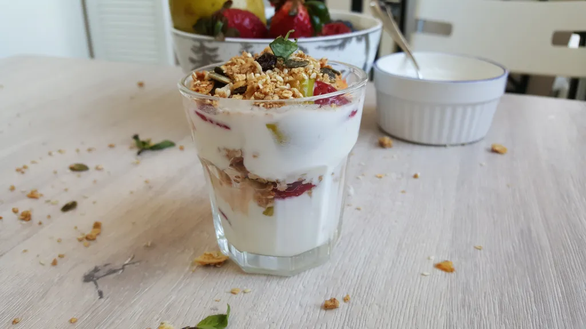

yogurt_parfait recipe

Description
I am not that fond of yogurts in general but the yogurt parfait is something I welcome as breakfast or dessert. This yogurt recipe idea catches my fancy because it incorporates ingredients that I love: fruits and nuts.
It’s also very easy to make and is a quick and interesting breakfast option. You will love the contrasting textures of yogurt and cereal soaked in the sweet fruit juices.I hope you enjoy and welcome it as a breakfast option as I have.
Ingredients
- 2 cups of plain non fat yoghurt (you can use flavored yogurt)
- 1 cup of cereal or granola or muesli or mixed nuts (Kellogs brand preferred)
- 1 cup of fresh or frozen fruits, peeled and sliced (you can use any combination of fruits that you want,for this recipe, I used pawpaw,and grapes)
- 2 tablespoons of honey (you don’t need the honey if you use sweetened yoghurt)
- Fresh herbs like scent leaf, basil, mint etc. for garnishing, optional
Steps
- Add the honey to the plain yoghurt and mix well.
- In a clean tall glass cup, layer 1/2 cup of yoghurt at the bottom and allow to settle.
- Then place 1/4 cup fruits followed by 1/4 cup granola etc.
- Alternate the layers of fruits and granola/cereal etc with yoghurt until the glass is filled.
- Garnish with fresh herb leaves. Repeat the process for the second glass cup.
- Serve parfaits immediately to keep granola or cereal crunchy.
Home